Shepherd: Making Health Data Actionable
Shepherd is an AI health assistant that helps users understand health information in everyday life. Inspired by the role of a shepherd, it watches over users, filters misinformation, and gives actionable guidance based on users' health data.
Description of the project and our goal
Our project focuses on health and wellness after COVID-19. We found that people care more about daily health monitoring, but they still face two major problems: online health misinformation and health data that does not clearly tell them what to do next.
Trustworthy information
Users need a simple way to know whether online health information is reliable, exaggerated, or unclear.
Actionable guidance
Wearables and health apps show many numbers, but users often need help understanding what those numbers mean in daily life.
Calm, personal, and timely support
Our goal is to make health information easier to understand and act on, without sending too many alerts or making users feel stressed.
Our learning and execution process
Finding the post-COVID health problems
We first reviewed the problems from Phase 1. After COVID-19, people care more about health, but they also face too much health information online and passive health tracking with no clear next step.
From this, we summarized our user needs: trustworthy information, actionable guidance, personalization, timely support, lower mental effort, and calm interaction.
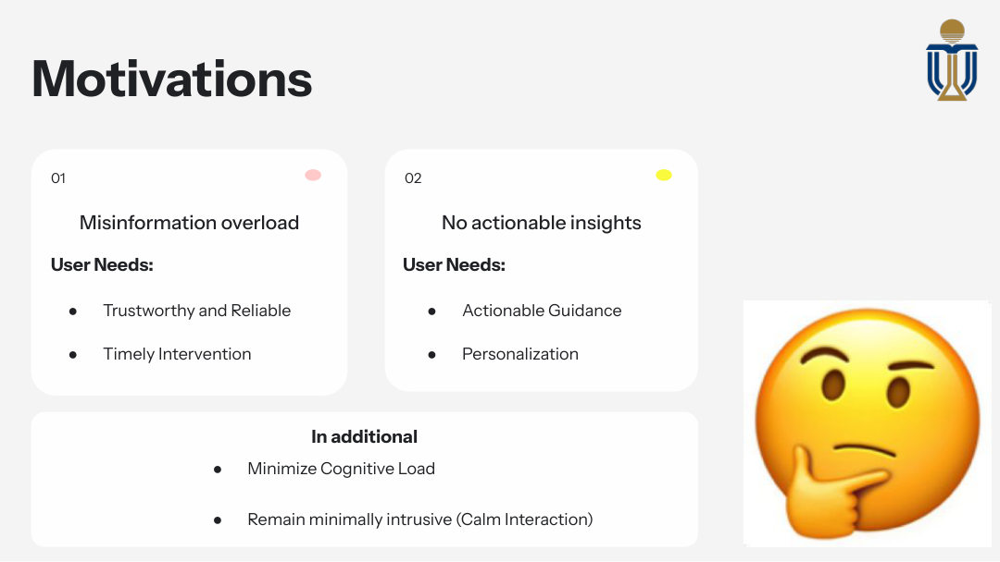
Making the user flow easier
We used GOMS to think about the current user flow. A user may need to take a screenshot, open ChatGPT, write a prompt, and upload the image. We wanted our system to reduce these steps.
This helped us understand that Shepherd should make the process more direct and require fewer manual actions.
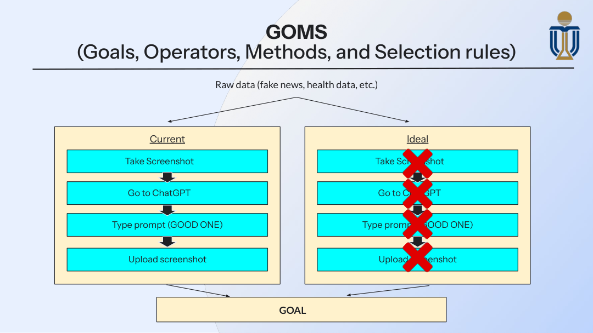
Testing the early product direction
After brainstorming, we created low-medium fidelity concepts to test how the product could appear in real use. At this stage, we focused on the basic screens and interaction flow.
This helped us move from a broad idea to a more concrete prototype direction.
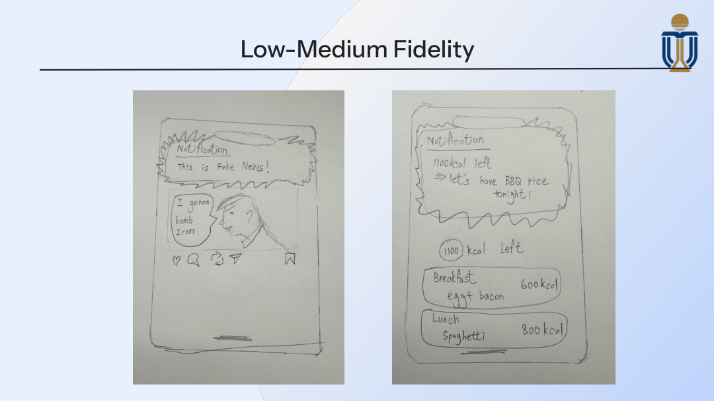
Building the first working prototype
Based on our early ideas, we developed Prototype I, called SmartLens. It combined health data cards, sleep monitoring, fake-news detection, and calorie scanning in one dashboard.
This prototype helped us turn our idea into something visible, so users could react to the interface and give more concrete feedback.
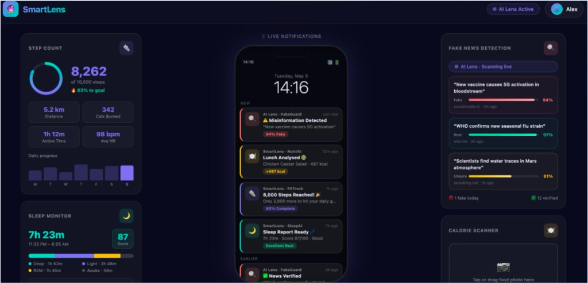
Collecting user opinions on Prototype I
After building Prototype I, we interviewed users with a short set of questions. We asked about usefulness, actionability, ease of understanding, trust, and whether they would follow the system's suggestions.
This step helped us check whether the product idea made sense to real users, not just to our team.
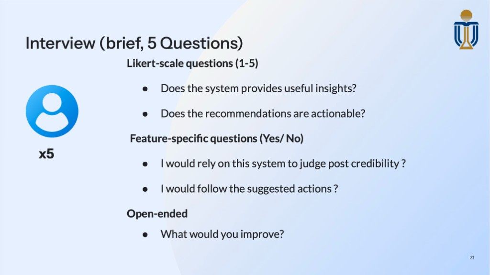
Finding what needed to improve
The feedback showed that users liked the idea and found the suggestions actionable, but they also felt the system could create too many notifications.
This feedback became very important. It told us that the next version should be calmer, less intrusive, and easier to trust.
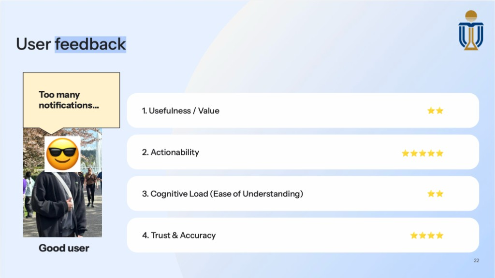
Developing the final product direction
Based on the interview feedback, we developed Prototype II as Shepherd. We made the idea more focused: a health assistant that filters misinformation, gives actionable guidance, and uses context to understand the user's situation.
We also emphasized quiet interaction, so the system would support users without constantly interrupting them.
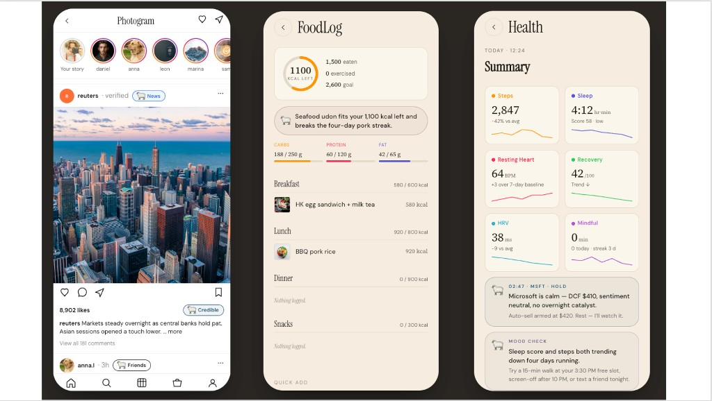
Explaining what makes Shepherd different
After developing Shepherd, we summarized three innovative features: fake-news automatic detection, actionable health guidance, and context-aware inference.
This step helped us explain why Shepherd is not just a dashboard. It is designed to help users understand information and take action.
Fake-news automatic detector
Shepherd helps users check health information from social media and avoid misleading claims.
Actionable health guidance
Shepherd turns raw health data into simple suggestions for what the user can do next.
Context-aware inference
Shepherd connects health data with daily context to give more relevant support.
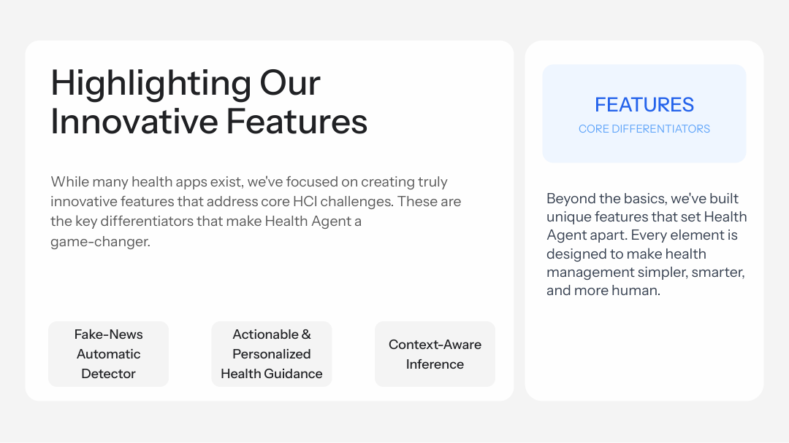
Designing the final evaluation
After building Prototype II, we designed a questionnaire to test whether Shepherd was useful, understandable, trustworthy, and practical for different users.
We interviewed 5 friends and family members across age groups, from 18 to 75. The questionnaire included feature questions, privacy and trust questions, and open-ended feedback.
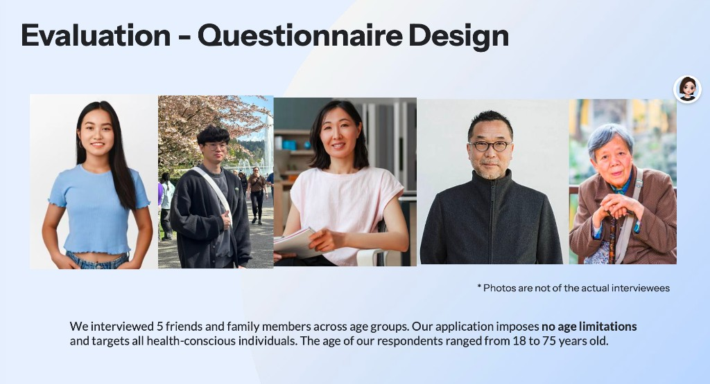
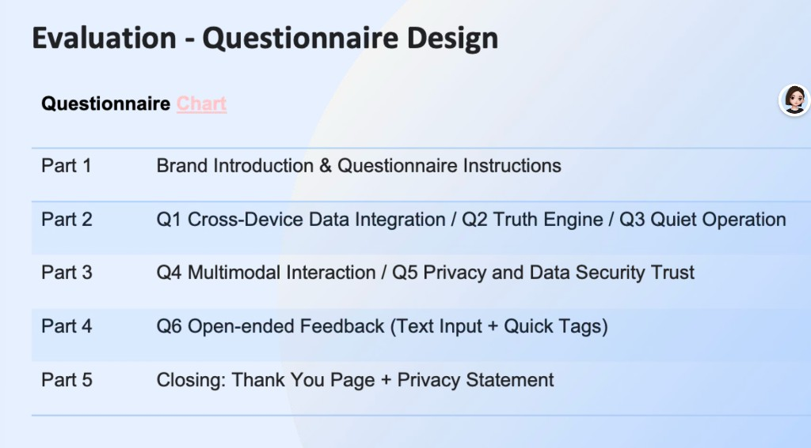
Showing the final prototype and reflecting on feedback
The final feedback helped us understand what users liked and what still needed improvement. Users generally liked cross-device data integration and the truth engine, while quiet operation received more mixed opinions.
We also learned that users wanted more environment-aware alerts and extra health features, such as mental health detection, medication reminders, and personalized meal plans.
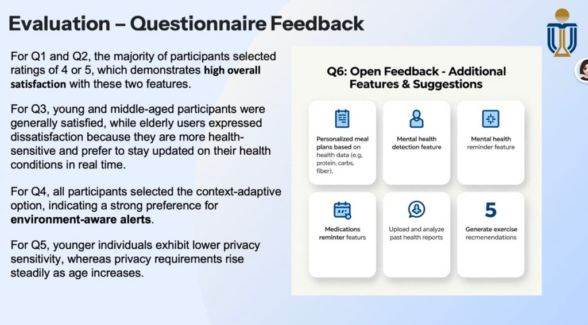
Comparing feedback before and after improvements
We also summarized the final user feedback with rating changes. This helped us show whether the later version improved usefulness, actionability, ease of understanding, and trust.
The final ratings gave us a clearer picture of how users reacted after we refined the product from SmartLens to Shepherd.
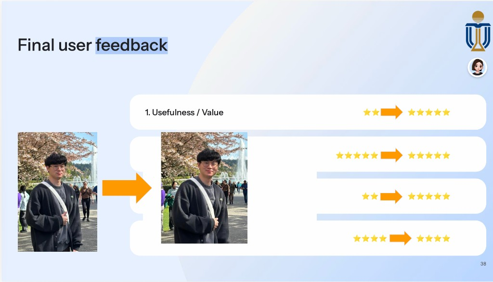
My responsibility in the group and achievements at each milestone
Needfinding and brainstorming with my team
I worked with my team on needfinding and brainstorming to shape a product direction for post-COVID health needs. I helped refine our problem framing (for example, misinformation overload and passive tracking without clear next steps) and contributed to the shared user needs we documented on our Motivations slide, so the group could move toward a concrete design.
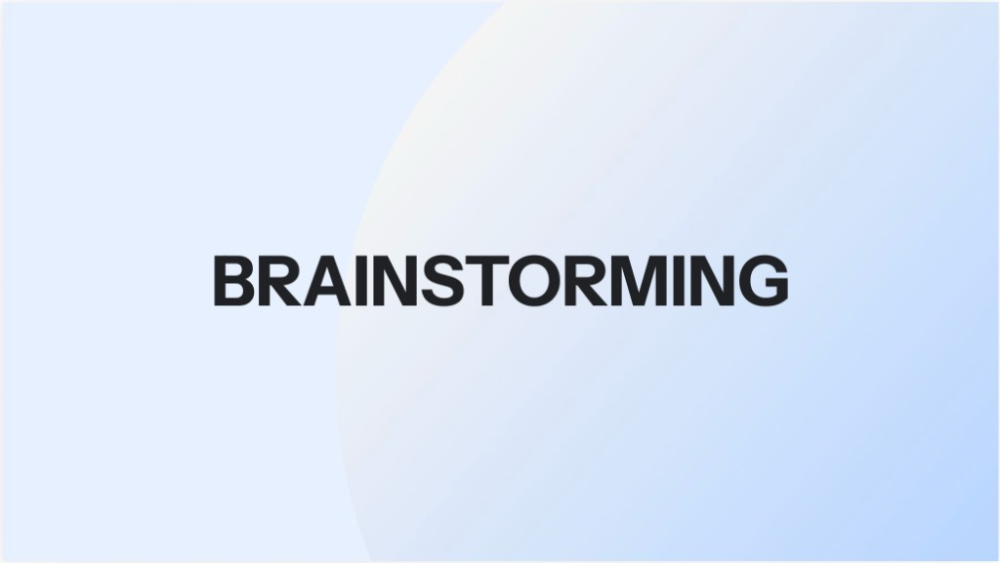
Implementing Health Checks Functions
I built the Health Checks flow in SmartLens: users can try demo watch data or import wearable JSON, then see steps, sleep stages, and scores on clear cards alongside gentle alerts when something looks off. I also wired a “real watch adapter” path so exports can be normalized into one schema before the UI and AI coach turn those numbers into short, actionable wellness suggestions—not just passive metrics on the screen.
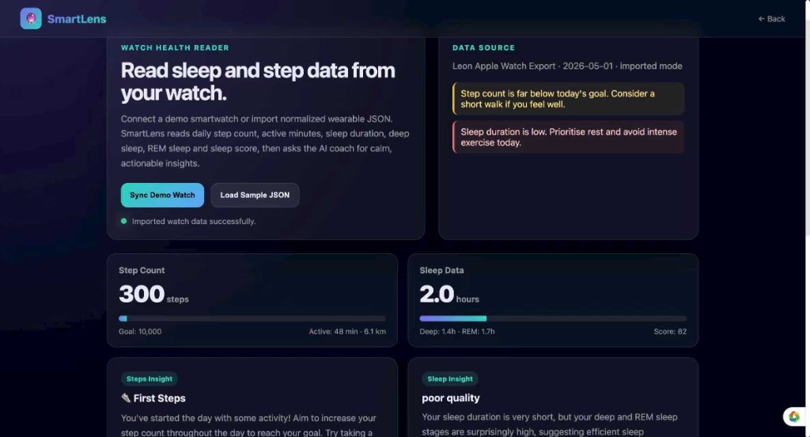
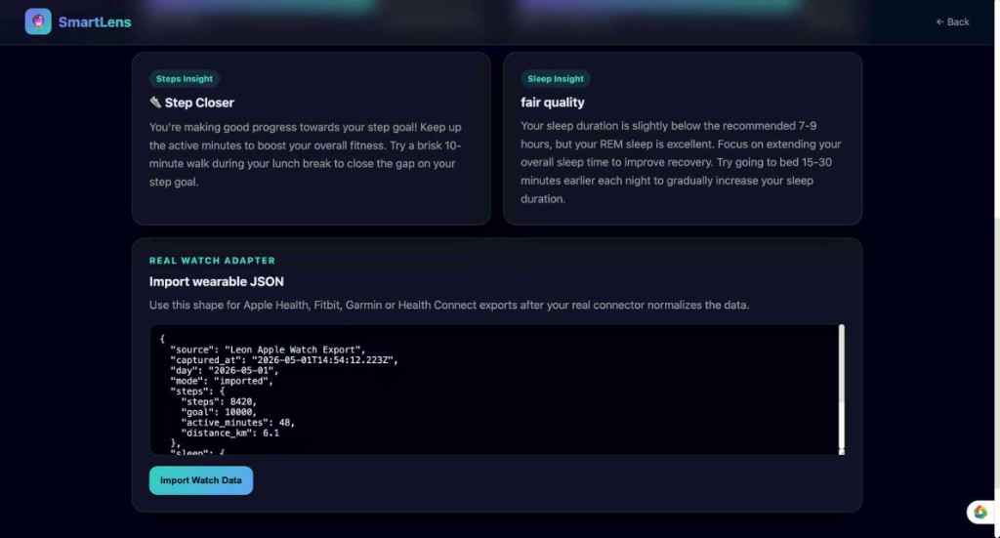
Presentation: Phase I and Phase II
In Phase I, I was responsible for two sections, How this Product relates to HCI and Core Functions & UI Design. On the HCI side, I explained how the idea fits HCI work: it starts from real post-COVID needs, earns trust with clear sources, keeps notifications calm, and treats health data carefully. On the core functions side, I walked through what we wanted to build and how it would look on screen, such as tying data sources together, checking false health claims, offering tailored suggestions, and only sending alerts when something actually matters.
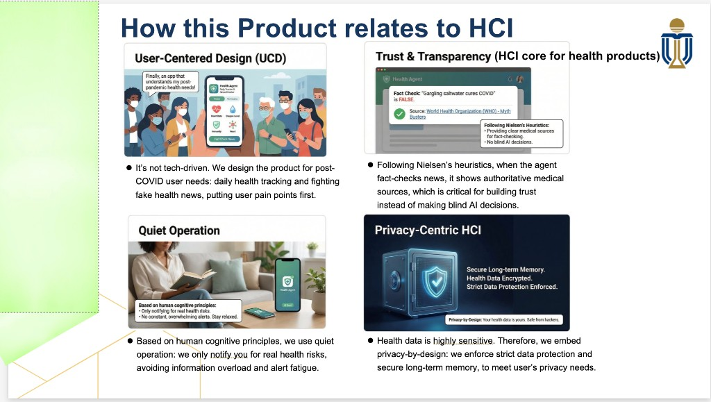
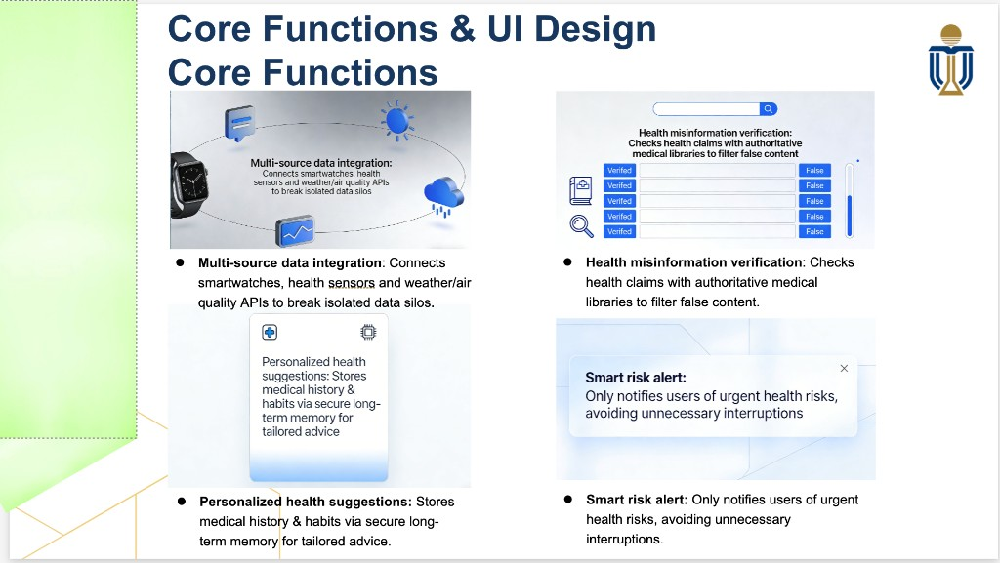
In our Phase II presentation, I spoke about our innovative features and justified our main design decisions. I connected what we learned in needfinding to what we shipped. On the deck we call out two big pains: the post-COVID flood of unreliable health information online, and passive tracking that still does not tell people what to do next. I explained how Shepherd tries to answer that through features such as checking dubious health posts and turning tracker data into personalized, actionable guidance. In the justification slides I kept returning to the same priorities: stay user-centered from need to solution, build in privacy by design, and keep interaction quiet and trustworthy so users are not overwhelmed by alerts.
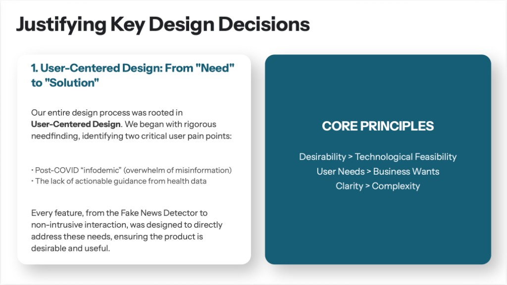
My personal reflection: knowledge gained, lessons learned, and challenges
What I learned
I learned that an AI health product cannot only be technically correct. It also needs to be easy to understand, trustworthy, and suitable for real users. HCI concepts such as cognitive load, alert fatigue, privacy, and user control helped me think beyond just building the feature.
I also learned that showing more data is not always better. Users may already have step count, sleep data, or health news, but they need help understanding what it means and what they should do next.
Another important lesson is that user feedback can change the direction of a product. At first, we focused more on adding useful functions. After hearing that users worried about too many notifications, I understood that a health assistant should be helpful but also quiet.
Through my Health Checks work, I also learned how to connect technical work with design goals. Reading watch data is only the first step. The more important part is turning that data into clear advice that users can actually use.
Challenges encountered
One challenge was deciding how much information to show. Health data can be complex, but the page still needed to be simple enough to scan quickly.
Another challenge was avoiding overconfident health advice. Since health information is sensitive, I framed the output as wellness guidance rather than medical diagnosis, and used quiet alerts to avoid unnecessary anxiety.
It was also challenging to balance personalization and privacy. A more personal assistant needs more user data, but health data is very sensitive. This made me realize why privacy controls and clear data explanations are important for building trust.
Finally, teamwork itself was a learning process. Our product included fake news detection, food logging, health checks, and context-aware suggestions. We had to make these parts feel like one system instead of separate tools.